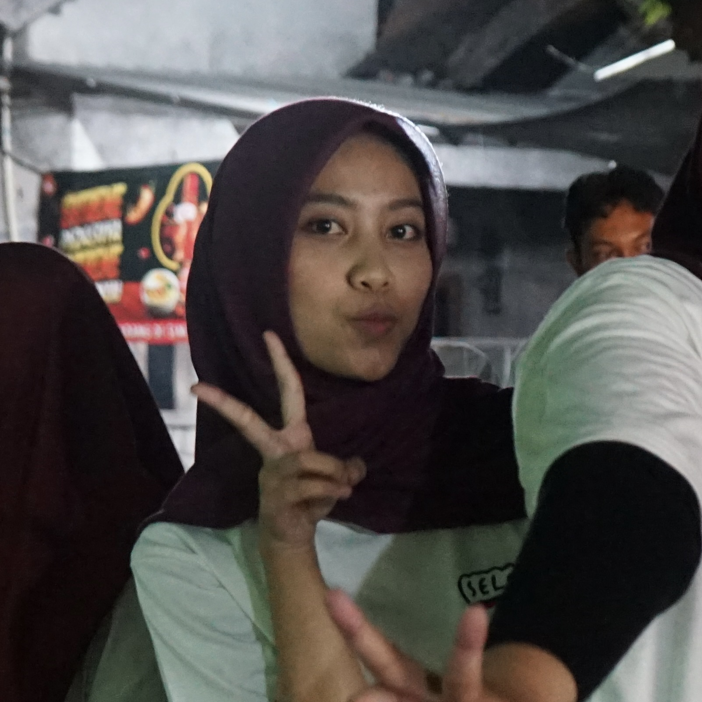
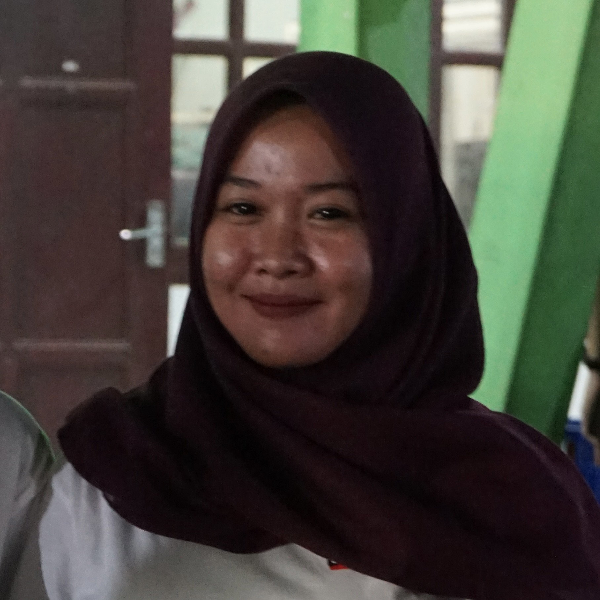

STRUKTUR PENGURUS INTI
Geser ke kanan atau kiri untuk melihat detail pengurus

[Nama Sek II]
Sekretaris II
NIM: 2026004

Febiola Giska Putri
Sekretaris I
NIM: 2026003
Muhammad Kevin Maulana
Ketua
NIM: 2026001
Muhammad David Adnawan
Wakil Ketua
NIM: 2026002

Kadarini Setyowati
Bendahara I
NIM: 2026005

[Nama Ben II]
Bendahara II
NIM: 2026006
```
### 2. Update JavaScript (Paling Bawah)
Pastikan Anda mengubah angka `initialSlide` dari `1` menjadi `2` pada bagian script terbawah, karena sekarang urutan kartu Ketua ada di urutan ketiga (dalam sistem array kodingan, hitungannya adalah 0, 1, 2).
```html